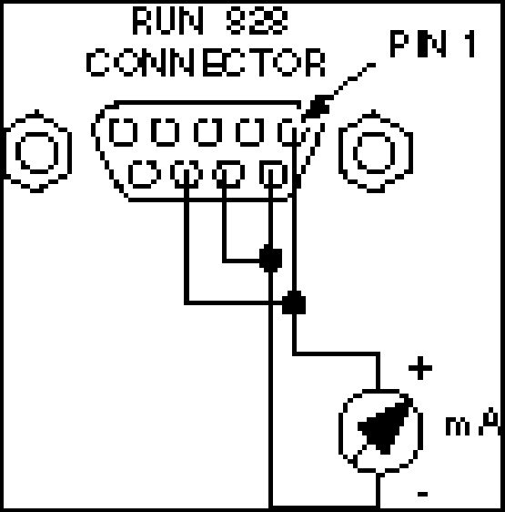
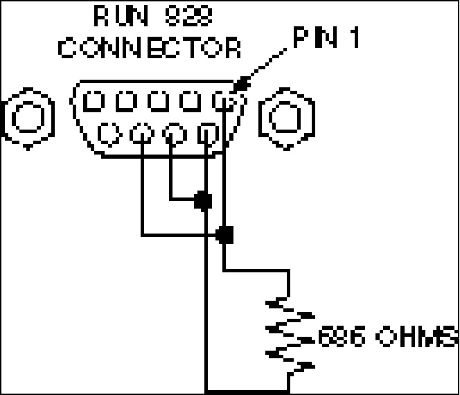

Operating Documentation
Direction 5440001-3, Rev# 6
Signa HDxt Service Methods
Module Version 1.0, Version Date 5/26/09
Operating Documentation |
| Required Persons | Preliminary Reqs | Procedure | Finalization |
|---|---|---|---|
| 1 |
This document contains procedures for calibrating the Granite and Advantech Magnet Monitors.
| ||||
| The Magmon3 does not require calibration as there is a current sensor on the heater output. | ||||
| ||||
| There are no adjustments for the Advantech Magnet Monitor. If the helium readings are out of specification, the magnet monitor should be replaced. | ||||
Obtain Magnet Monitor Circuit Tester, part number 2362470.
Plug provided 9 pin cable into MMCTJ2 and into the short adapter cable connecting Mag Mon J7 and the magnet cable (if the Pacemaker FMI is installed, the cable will connect to the Pacemaker, J2).
Select LCC 95%, 50%, 0% positions and verify reading accuracy in Table 1.
Lhe LED should illuminate ~20 seconds each time sample button is pressed. If a Granite Magnet Monitor is out of specification, proceed to section 2 for calibration procedure. If Advantech Magnet Monitor is out of specification, replace the magnet monitor.
This check verifies proper operation of Mag Mon heater and Lhe sample lines and is very useful for determining if Mag Mon is causing high vessel pressure because a Heater or Lhe metering line is latched “ON”.
Plug MMCT cable J2 into the short adapter cable connecting Mag Mon J7 and the magnet cable. (If the Pacemaker FMI is installed, the cable will connect to the PacemakerJ2).
Verify Heater and Lhe LED’s do not illuminate longer than 3 minutes.
Table 1:
| Setting | Upper Spec | Lower Spec |
| 95% | 97.5% | 92.5% |
| 50% | 53% | 47% |
| 0% | 6% | 0% |
Illustration 1: WIRING FOR SENSOR CALIBRATION

Plug the Magnet Monitor's power cord into an outlet. Turn on the Magnet Monitor.
Wait approximately two minutes to allow the system to settle.
Press the [SAMPLE] button.
Verify the Multimeter reads 75.0 mA.
Turn off the Magnet Monitor's power switch.
On the connector of Run 828: replace the Multimeter with a 686 ohm resistor capable of dissipating four watts (or use the Helium Resistance Box (46-265286G1) to simulate 686 ohms). The connector pins should now be wired as shown in Illustration 2.
Illustration 2: WIRING FOR CURRENT SOURCE VOLTAGE CALIBRATION

Connect the Multimeter between TP1 on the Magnet Monitor Interface Board and the chassis common.
Turn on the Magnet Monitor.
Wait approximately two minutes to allow the system to settle.
Press the [SAMPLE] button.
djust the R7 GAIN potentiometer until the Multimeter reads 5.000 Vdc. See Illustration 2 for the location of R7.
Verify the front panel reads 0% +/- 1.0%.
Turn off the Magnet Monitor's power switch.
Place a shorting jumper across the 686 ohm test resistor (or set the Helium Resistance Box to zero ohms).
Turn on the Magnet Monitor.
Wait approximately two minutes to allow the system to settle.
Press the [SAMPLE] button.
Verify the voltmeter reads 0.000 Vdc.
Verify the front panel reads 100% +/- 1.0%.
Repeat from Step 12 until no further changes are necessary.
Reconnect Run 828 to P403.
No finalization steps.